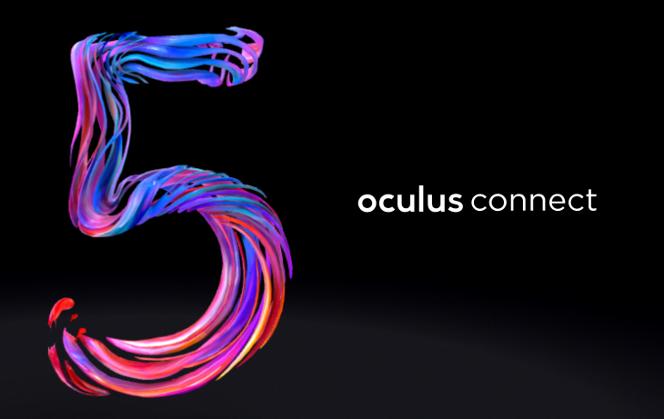
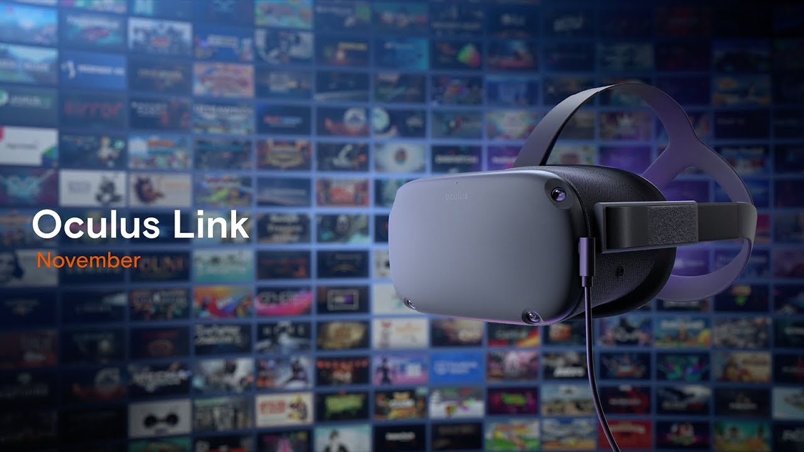
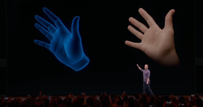

Since the headset is standalone, everything is in the headset, like tracking cameras, audio, and OS. It runs off of a Qualcomm Snapdragon 835 system. The Oculus Quest's resolution is actually better than its PCVR counter-part (Rift S, at 1280 X 1440, 80hz refresh) with the Quest at 1440 X 1600 pixels per eye, but has a slightly lower refresh rate at 72hz. The tracking cameras are the same as the Rift S as well, named Oculus Insight. The system relies on four wide angle cameras located on each corner of the headset to track the headset spatially. Don't worry about running into anything either, as the quest has something called Guardian which allows you to set up walls/barriers that will warn you if you get close to them to ensure you run into something while playing.
The Oculus Quest was revealed at Oculus Connect 5 on September 26, 2018, and was released on May 21, 2019, meaning that it is now 6 months old as of today. It originally released with just over 50 games.
Currently, there are many more games avaliable for the Quest with much more to come. Also, if you have a VR-ready PC, there is an extension called Oculus Link that allows the Quest to run PCVR Games off the PC, however, you are going to be tethered to the computer by a cord.
One feature that is yet to come is hand-tracking, which is revolutionary to the VR industry. This won't completely replace controlers but is still a huge improvement in ways we can play. The cameras will be able to bring yor hands into the virtual world and offer much more immersive experiences.
